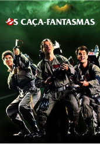

Os Caça-Fantasmas
Em Nova York Peter Venkman, Ray Stantz e Egon Spengler são três cientistas do departamento de psicologia da Columbia University, que se dedicam ao estudo de casos paranormais. Quando a subvenção termina eles são despedidos e Venkman sugere que abram um negócio próprio, a exterminadora de fantasmas Ghostbusters. Inicialmente eles só têm despesas e nenhum cliente, mas eis que surge Dana Barrett, uma violoncelista que teve uma experiência assustadora em seu apartamento.